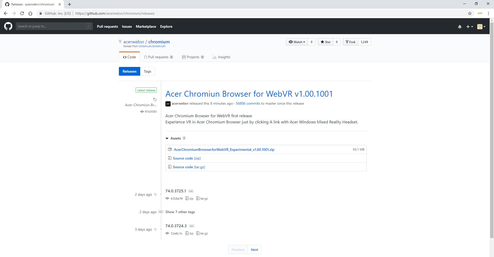

01
Install Acer Chromium Browser for WebVR (Experimental)
- Go to Acer Chromium Browser for WebVR releases, download and install AcerChromiumBrowserforWebVR(experimental).msi installer.
- Source code of Acer Chromium Browser for WebVR (experimental)

02

You must have the Mixed Reality Portal running
- Start the Mixed Reality Portal.
03
Launching WebVR
- Launch Acer Chromium Browser for WebVR
- Navigate to a WebVR enabled page. Or click the Acer Chromium Browser for WebVR Extension icon in the Acer Chromium Browser upper right corner. Acer WebVR Start Page will show up. You can start with the recommended WebVR experiences listed in the portal.